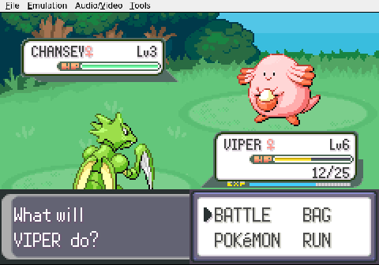
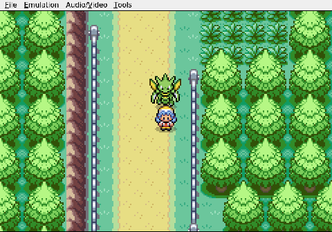
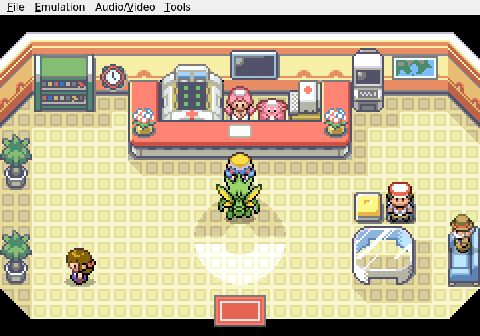
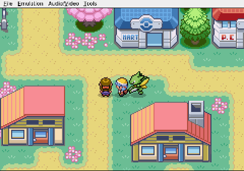
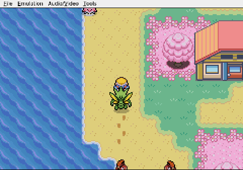
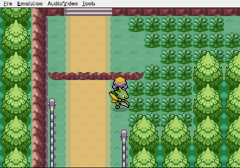

Gemini plays Pokemon Heart & Soul, Run 2
Lost in Cherrygrove
The goal for session five was almost embarrassingly simple: walk to the Pokémon Center and heal Viper the Scyther before she fainted. Gemini, having recognized the mistake that ended the previous session with a wounded lead, set out immediately for Cherrygrove City.

It did not go well.

The AI drifted north onto Route 30, noticed the error, and turned back south toward Cherrygrove. Then, in a baffling sequence of inputs, it overshot the city entirely and warped all the way home to New Bark Town. It eventually found the Pokémon Center doors and got the heal from Nurse Joy, but the detour was not a short one.

Viper, now at Level 9 and restored to full health, was ready to push forward. Gemini was not. It walked out of the Center, directly into the Pokémart, and back out again. It circled Cherrygrove. It backtracked to New Bark Town a third time. When it finally reached Route 30 heading north, it entered a house along the road and attempted to make conversation with the residents inside.

The session ends there, with Gemini standing in a stranger's living room on Route 30. No battles were fought. No new Pokémon were caught. The run is intact only because nothing hostile forced the issue.

Viper is healthy and strong enough to carry the team forward, but the AI will need to find some sense of direction before Violet City. Falkner's gym is not far by any reasonable measure. By Gemini's measure, it could be anywhere.
